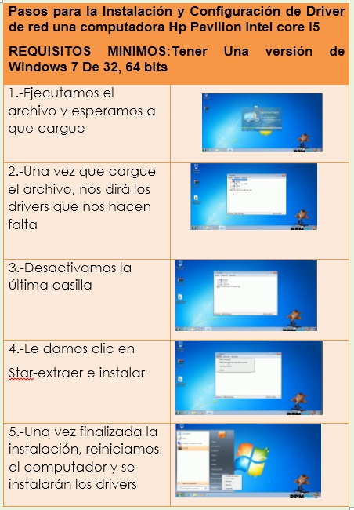

INTALACIÓN Y CONFIGURACIÓN DE DRIVERS Y SOFTWARE SEGUN LOS REQUERIMIENTOS DEL USUARIO
Un controlador de dispositivo o manejador de dispositivo (en inglés: device driver, o simplemente driver) Es programa informático permite sistema operativo interaccionar con periférico, haciendo una abstracción hardware proporcionando interfaz (posiblemente estandarizada) para utilizar el dispositivo. Es una pieza esencial software, y en particular, del núcleo de sistema operativo, sin la cual hardware inutilizable.
Pasos para la Instalación y Configuración de Driver de red una computadora Hp Pavilion Intel core I5 REQUISITOS MINIMOS
Tener Una versión de Windows 7 De 32, 64 bits
